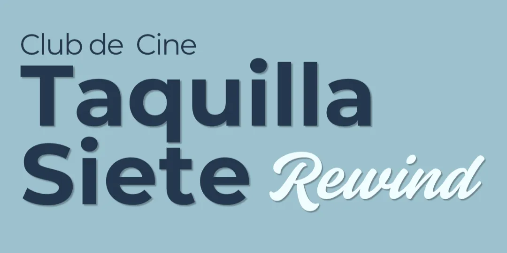

Proyección y coloquio · Con Cines Embajadores, Madrid

Taquilla Siete Rewind son proyecciones de cine en Madrid con presentación y coloquio, pensadas para complementar la cartelera actual.
En cada pase rescatamos una película que sirve de referente o comparte camino con algún estreno del momento: para entender qué se hizo antes, y ver con otros ojos lo que hoy nos puede parecer novedoso.
Es nuestra forma de dar contexto histórico y acercar el cine más clásico a las nuevas generaciones.
Rewind es una actividad en colaboración con Cines Embajadores. Anunciamos cada nueva proyección en Instagram y en el calendario del club.
← Volver a actividadesDomingo 15 de noviembre, 12:00h — Cines Embajadores Río (Madrid). Con motivo del próximo estreno de Camp Miasma (2026), rescatamos Bahía de sangre (1971), de Mario Bava. Presentación, proyección y coloquio. Tras la proyección se sortearán 4 entradas para el estreno de Camp Miasma.
Entradas a la venta próximamente en Cines Embajadores.
Sábado 17 de octubre de 2026 — Cines Embajadores Río (Madrid). Con motivo del estreno de Hope (2026), de Na Hong Jin, rescatamos su The Chaser (2008).